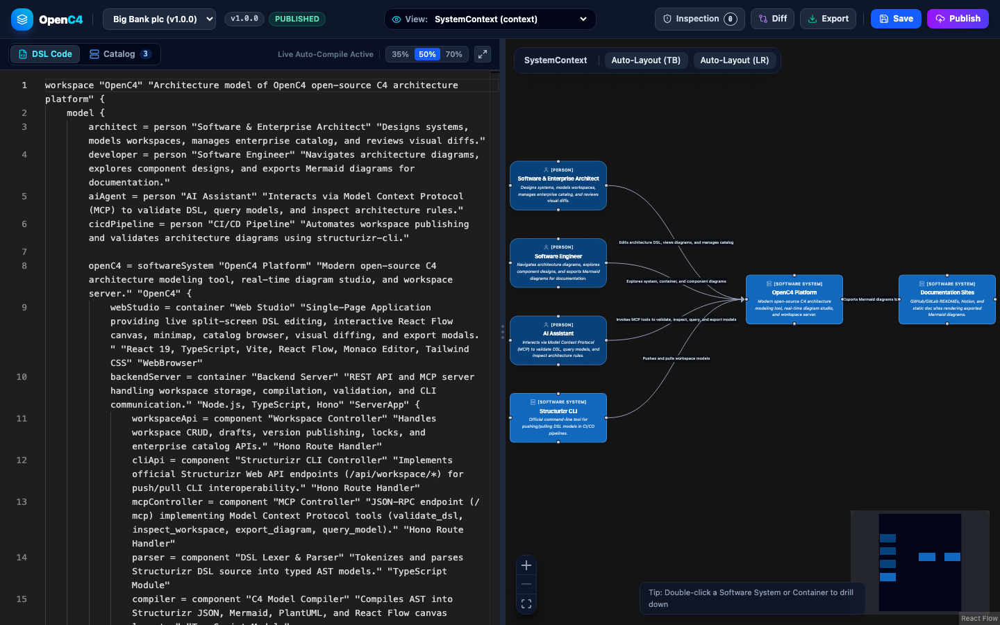

Model, Visualize & Evolve
Software Architecture with Code
OpenC4 is a modern, high-performance C4 architecture platform. Build interactive architecture diagrams with real-time Monaco DSL editing, sub-50ms canvas rendering, an enterprise model catalog, and native AI Model Context Protocol (MCP) — fully compatible with Structurizr and Mermaid.

Experience the OpenC4 Web Studio
See how the split-screen DSL editor instantly synchronizes with the interactive C4 canvas. Try drilling down into systems or switching presets!
Built for Modern Engineering Teams
Everything you need to model, document, and govern software architectures from code without rigid proprietary silos.
Live Monaco DSL Studio
Write Structurizr DSL with rich syntax highlighting, auto-completion, and sub-50ms reactive diagram rendering. Instant visual feedback as you type.
Interactive C4 Canvas
Fluid pan, zoom, and minimap powered by React Flow with intelligent Dagre auto-layout. Drag nodes to custom positions with non-destructive coordinate saving.
Deep C4 Drill-Down
Seamlessly traverse abstraction levels: double-click a Software System to inspect its Containers; click a Container to explore internal Components.
Enterprise Model Catalog
Publish systems to an organization-wide model catalog. Team workspaces can discover and import external dependencies without duplicating definitions.
Visual Diff & Versioning
Publish workspaces through formal lifecycles (Draft → Published). Side-by-side color-coded visual diffs clearly highlight added, changed, or deleted nodes.
Architecture Quality Linter
Automated linting engine detects orphaned elements, missing descriptions, unassigned technologies, and conflicting implied relationships automatically.
Native Model Context Protocol (MCP)
Built-in /mcp JSON-RPC endpoint allows AI assistants (Claude, Gemini, ChatGPT, Antigravity) to inspect, query, validate, and generate C4 models directly.
Mermaid & Multi-Format Export
One-click export to Mermaid diagrams for Git READMEs, C4-PlantUML for legacy documentation, official Structurizr JSON, SVG vector graphics, and raw DSL.
Structurizr CLI & REST API
100% compatible drop-in replacement for the Structurizr Web API. Push and pull workspaces seamlessly from CI/CD pipelines via structurizr-cli.
OpenC4 System Architecture
The architecture of OpenC4 itself, modeled in Structurizr DSL and compiled using OpenC4's native Model Context Protocol (MCP) server.
Illustrates external actors (Architects, Developers, AI Assistants, CI/CD) and integrated tools (Structurizr CLI, Documentation sites) interacting with the OpenC4 platform.
flowchart TB
node_5["OpenC4 Platform
SOFTWARESYSTEM
Modern open-source C4 architecture modeling tool, real-time diagram studio, and workspace server."]
node_1["Software & Enterprise Architect
PERSON
Designs systems, models workspaces, manages enterprise catalog, and reviews visual diffs."]
node_2["Software Engineer
PERSON
Navigates architecture diagrams, explores component designs, and exports Mermaid diagrams for documentation."]
node_3["AI Assistant
PERSON
Interacts via Model Context Protocol (MCP) to validate DSL, query models, and inspect architecture rules."]
node_17["Structurizr CLI
SOFTWARESYSTEM
Official command-line tool for pushing/pulling DSL models in CI/CD pipelines."]
node_18["Documentation Sites
SOFTWARESYSTEM
GitHub/GitLab READMEs, Notion, and static doc sites rendering exported Mermaid diagrams."]
node_1 -->|"Edits architecture DSL, views diagrams, and manages catalog [HTTPS]"| node_5
node_2 -->|"Explores system, container, and component diagrams [HTTPS]"| node_5
node_3 -->|"Invokes MCP tools to validate, inspect, query, and export models [JSON-RPC / HTTP]"| node_5
node_17 -->|"Pushes and pulls workspace models [HTTP / REST]"| node_5
node_5 -->|"Exports Mermaid diagrams to [Markdown]"| node_18
Deconstructs OpenC4 into its high-level technical containers: the React 19 Web Studio, the Node.js/Hono Backend Server & MCP engine, and the SQLite persistence layer.
flowchart TB
node_6["Web Studio
CONTAINER [React 19, TypeScript, Vite, React Flow, Monaco Editor, Tailwind CSS]
Single-Page Application providing live split-screen DSL editing, interactive React Flow canvas, minimap, catalog browser, visual diffing, and export modals."]
node_7["Backend Server
CONTAINER [Node.js, TypeScript, Hono]
REST API and MCP server handling workspace storage, compilation, validation, and CLI communication."]
node_16["Database
CONTAINER [SQLite]
Persists workspaces, DSL source code, revision history, API credentials, and enterprise catalog."]
node_1["Software & Enterprise Architect
PERSON
Designs systems, models workspaces, manages enterprise catalog, and reviews visual diffs."]
node_2["Software Engineer
PERSON
Navigates architecture diagrams, explores component designs, and exports Mermaid diagrams for documentation."]
node_3["AI Assistant
PERSON
Interacts via Model Context Protocol (MCP) to validate DSL, query models, and inspect architecture rules."]
node_17["Structurizr CLI
SOFTWARESYSTEM
Official command-line tool for pushing/pulling DSL models in CI/CD pipelines."]
node_18["Documentation Sites
SOFTWARESYSTEM
GitHub/GitLab READMEs, Notion, and static doc sites rendering exported Mermaid diagrams."]
node_1 -->|"Edits architecture DSL, views diagrams, and manages catalog [HTTPS]"| node_6
node_2 -->|"Explores system, container, and component diagrams [HTTPS]"| node_6
node_3 -->|"Invokes MCP tools to validate, inspect, query, and export models [JSON-RPC / HTTP]"| node_7
node_17 -->|"Pushes and pulls workspace models [HTTP / REST]"| node_7
node_6 -->|"Fetches workspaces, saves layout coordinates, and manages catalog [JSON / REST]"| node_7
node_6 -->|"Exports Mermaid diagrams to [Markdown]"| node_18
node_7 -->|"Reads and writes data [SQL / better-sqlite3]"| node_16
Details the internal architecture of the OpenC4 backend server: controllers, AST lexer/parser, compiler, linter, visual diff engine, and repository storage.
flowchart TB
node_8["Workspace Controller
COMPONENT [Hono Route Handler]
Handles workspace CRUD, drafts, version publishing, locks, and enterprise catalog APIs."]
node_9["Structurizr CLI Controller
COMPONENT [Hono Route Handler]
Implements official Structurizr Web API endpoints (/api/workspace/*) for push/pull CLI interoperability."]
node_10["MCP Controller
COMPONENT [Hono Route Handler]
JSON-RPC endpoint (/mcp) implementing Model Context Protocol tools (validate_dsl, inspect_workspace, export_diagram, query_model)."]
node_11["DSL Lexer & Parser
COMPONENT [TypeScript Module]
Tokenizes and parses Structurizr DSL source into typed AST models."]
node_12["C4 Model Compiler
COMPONENT [TypeScript Module]
Compiles AST into Structurizr JSON, Mermaid, PlantUML, and React Flow canvas layouts."]
node_13["Architecture Linter
COMPONENT [TypeScript Module]
Automated rule checker identifying orphaned elements, missing metadata, and implied conflicts."]
node_14["Visual Diff Engine
COMPONENT [TypeScript Module]
Compares workspace versions and computes added, modified, and removed elements."]
node_15["Workspace Repository
COMPONENT [TypeScript Class / better-sqlite3]
Manages SQLite persistence for workspaces, revisions, API keys, locks, and catalog entries."]
node_3["AI Assistant
PERSON
Interacts via Model Context Protocol (MCP) to validate DSL, query models, and inspect architecture rules."]
node_17["Structurizr CLI
SOFTWARESYSTEM
Official command-line tool for pushing/pulling DSL models in CI/CD pipelines."]
node_6["Web Studio
CONTAINER [React 19, TypeScript, Vite, React Flow, Monaco Editor, Tailwind CSS]
Single-Page Application providing live split-screen DSL editing, interactive React Flow canvas, minimap, catalog browser, visual diffing, and export modals."]
node_16["Database
CONTAINER [SQLite]
Persists workspaces, DSL source code, revision history, API credentials, and enterprise catalog."]
node_3 -->|"Invokes MCP tools to validate, inspect, query, and export models [JSON-RPC / HTTP]"| node_10
node_17 -->|"Pushes and pulls workspace models [HTTP / REST]"| node_9
node_6 -->|"Fetches workspaces, saves layout coordinates, and manages catalog [JSON / REST]"| node_8
node_8 -->|"Queries and updates workspace records [Internal Call]"| node_15
node_8 -->|"Parses DSL source code [Internal Call]"| node_11
node_8 -->|"Compiles AST to JSON and layout coordinates [Internal Call]"| node_12
node_8 -->|"Computes visual differences between versions [Internal Call]"| node_14
node_9 -->|"Retrieves and saves workspace revisions [Internal Call]"| node_15
node_9 -->|"Parses uploaded DSL [Internal Call]"| node_11
node_9 -->|"Compiles workspace to Structurizr JSON [Internal Call]"| node_12
node_10 -->|"Parses DSL for validation [Internal Call]"| node_11
node_10 -->|"Inspects architectural rules and completeness [Internal Call]"| node_13
node_10 -->|"Exports diagrams to Mermaid, PlantUML, and JSON [Internal Call]"| node_12
node_10 -->|"Queries workspace models [Internal Call]"| node_15
node_15 -->|"Reads and writes data [SQL / better-sqlite3]"| node_16
The exact Structurizr DSL specification defining OpenC4, verified with 0 warnings by the OpenC4 quality linter.
workspace "OpenC4" "Architecture model of OpenC4 open-source C4 architecture platform" {
model {
architect = person "Software & Enterprise Architect" "Designs systems, models workspaces, manages enterprise catalog, and reviews visual diffs."
developer = person "Software Engineer" "Navigates architecture diagrams, explores component designs, and exports Mermaid diagrams for documentation."
aiAgent = person "AI Assistant" "Interacts via Model Context Protocol (MCP) to validate DSL, query models, and inspect architecture rules."
cicdPipeline = person "CI/CD Pipeline" "Automates workspace publishing and validates architecture diagrams using structurizr-cli."
openC4 = softwareSystem "OpenC4 Platform" "Modern open-source C4 architecture modeling tool, real-time diagram studio, and workspace server." "OpenC4" {
webStudio = container "Web Studio" "Single-Page Application providing live split-screen DSL editing, interactive React Flow canvas, minimap, catalog browser, visual diffing, and export modals." "React 19, TypeScript, Vite, React Flow, Monaco Editor, Tailwind CSS" "WebBrowser"
backendServer = container "Backend Server" "REST API and MCP server handling workspace storage, compilation, validation, and CLI communication." "Node.js, TypeScript, Hono" "ServerApp" {
workspaceApi = component "Workspace Controller" "Handles workspace CRUD, drafts, version publishing, locks, and enterprise catalog APIs." "Hono Route Handler"
cliApi = component "Structurizr CLI Controller" "Implements official Structurizr Web API endpoints (/api/workspace/*) for push/pull CLI interoperability." "Hono Route Handler"
mcpController = component "MCP Controller" "JSON-RPC endpoint (/mcp) implementing Model Context Protocol tools (validate_dsl, inspect_workspace, export_diagram, query_model)." "Hono Route Handler"
parser = component "DSL Lexer & Parser" "Tokenizes and parses Structurizr DSL source into typed AST models." "TypeScript Module"
compiler = component "C4 Model Compiler" "Compiles AST into Structurizr JSON, Mermaid, PlantUML, and React Flow canvas layouts." "TypeScript Module"
inspector = component "Architecture Linter" "Automated rule checker identifying orphaned elements, missing metadata, and implied conflicts." "TypeScript Module"
diffEngine = component "Visual Diff Engine" "Compares workspace versions and computes added, modified, and removed elements." "TypeScript Module"
repository = component "Workspace Repository" "Manages SQLite persistence for workspaces, revisions, API keys, locks, and catalog entries." "TypeScript Class / better-sqlite3"
}
database = container "Database" "Persists workspaces, DSL source code, revision history, API credentials, and enterprise catalog." "SQLite" "Database"
}
cliTool = softwareSystem "Structurizr CLI" "Official command-line tool for pushing/pulling DSL models in CI/CD pipelines." "ExternalTool"
docSites = softwareSystem "Documentation Sites" "GitHub/GitLab READMEs, Notion, and static doc sites rendering exported Mermaid diagrams." "ExternalSystem"
architect -> webStudio "Edits architecture DSL, views diagrams, and manages catalog" "HTTPS"
developer -> webStudio "Explores system, container, and component diagrams" "HTTPS"
aiAgent -> mcpController "Invokes MCP tools to validate, inspect, query, and export models" "JSON-RPC / HTTP"
cicdPipeline -> cliTool "Executes push and pull commands" "CLI"
cliTool -> cliApi "Pushes and pulls workspace models" "HTTP / REST"
webStudio -> workspaceApi "Fetches workspaces, saves layout coordinates, and manages catalog" "JSON / REST"
webStudio -> docSites "Exports Mermaid diagrams to" "Markdown"
workspaceApi -> repository "Queries and updates workspace records" "Internal Call"
workspaceApi -> parser "Parses DSL source code" "Internal Call"
workspaceApi -> compiler "Compiles AST to JSON and layout coordinates" "Internal Call"
workspaceApi -> diffEngine "Computes visual differences between versions" "Internal Call"
cliApi -> repository "Retrieves and saves workspace revisions" "Internal Call"
cliApi -> parser "Parses uploaded DSL" "Internal Call"
cliApi -> compiler "Compiles workspace to Structurizr JSON" "Internal Call"
mcpController -> parser "Parses DSL for validation" "Internal Call"
mcpController -> inspector "Inspects architectural rules and completeness" "Internal Call"
mcpController -> compiler "Exports diagrams to Mermaid, PlantUML, and JSON" "Internal Call"
mcpController -> repository "Queries workspace models" "Internal Call"
repository -> database "Reads and writes data" "SQL / better-sqlite3"
}
views {
systemContext openC4 "SystemContext" "The system context diagram for the OpenC4 platform." {
include *
autoLayout lr
}
container openC4 "Containers" "The container diagram for the OpenC4 platform." {
include *
autoLayout lr
}
component backendServer "BackendComponents" "The component diagram for the OpenC4 backend server." {
include *
autoLayout lr
}
}
}
How to Use OpenC4
Explore step-by-step guides for running OpenC4, writing C4 models, integrating with CI/CD, and empowering AI assistants.
Option A: Run Locally (Node.js & TypeScript)
Clone the repository and start the unified Hono backend and React frontend with the startup script.
git clone https://github.com/your-org/openc4.git cd openc4 ./run.sh
The web application will be accessible immediately at http://localhost:8000.
Option B: Docker Compose
Deploy OpenC4 with containerized multi-stage builds and SQLite persistence in seconds.
docker compose up --build
Data is persisted in the local volume mapping ./data:/app/data.
Writing C4 Models with Structurizr DSL
OpenC4 uses standard Structurizr DSL syntax. Models are composed of People, Software Systems, Containers, Components, and Relationships.
workspace "Online Banking" "Architecture Model" {
model {
// Actors
customer = person "Bank Customer" "Personal accounts user."
// Systems
bankingApp = softwareSystem "Internet Banking" "Allows users to transfer funds." {
web = container "Single-Page Web App" "React UI" "React, TypeScript"
api = container "Backend API" "Business logic" "Node.js, Hono"
db = container "Database" "Financial records" "PostgreSQL" "Database"
}
paymentGateway = softwareSystem "Payment Provider" "Third party gateway." "External"
// Relationships
customer -> web "Uses"
web -> api "JSON/HTTPS"
api -> db "Reads and writes" "SQL"
api -> paymentGateway "Authorizes payments" "REST API"
}
views {
systemContext bankingApp "Context" {
include *
autoLayout lr
}
container bankingApp "Containers" {
include *
autoLayout lr
}
}
}
Automating Architecture in CI/CD with structurizr-cli
Because OpenC4 natively implements the Structurizr REST API, you can push or pull diagrams directly from GitHub Actions, GitLab CI, or scripts.
name: Sync Architecture Model
on:
push:
paths:
- 'architecture/**.dsl'
jobs:
push-diagram:
runs-on: ubuntu-latest
steps:
- uses: actions/checkout@v4
- name: Push to OpenC4 Platform
run: |
docker run --rm -v $(pwd):/usr/local/structurizr structurizr/cli \
push -url https://openc4.yourcompany.com/api \
-id 1 \
-key ${{ secrets.OPENC4_KEY }} \
-secret ${{ secrets.OPENC4_SECRET }} \
-workspace architecture/workspace.dsl
Connecting AI Assistants via Model Context Protocol (MCP)
OpenC4 exposes a JSON-RPC MCP server at POST /mcp. Configure your favorite AI client (Claude Desktop, Cursor, Gemini) to inspect and lint architecture models.
{
"mcpServers": {
"openc4": {
"command": "curl",
"args": ["-X", "POST", "http://localhost:8000/mcp"]
}
}
}
Available MCP Tools:
validate_dsl: Checks DSL syntax and returns AST metrics or syntax errors.inspect_workspace: Audits models for orphaned elements, missing tags, and implied conflicts.export_diagram: Exports views to Mermaid, C4-PlantUML, or Structurizr JSON.query_model: Searches systems, containers, and relationships programmatically.
Exporting to Mermaid for GitHub READMEs & Documentation
Export C4 diagrams directly into Mermaid syntax. Paste the snippet into any markdown document to render live diagrams on GitHub, GitLab, Notion, or VitePress!
```mermaid
C4Context
title System Context Diagram for Internet Banking
Person(customer, "Personal Banking Customer", "Customer of the bank")
System(bankingSystem, "Internet Banking", "Allows customers to view accounts")
System_Ext(coreBanking, "Core Banking", "Ledger and account balances")
Rel(customer, bankingSystem, "Uses", "HTTPS")
Rel(bankingSystem, coreBanking, "Queries", "XML/HTTPS")
```
OpenC4 vs The Alternatives
See how OpenC4 compares to legacy Structurizr on-premises, manual drawing tools, and static diagram scripts.
| Feature / Capability | OpenC4 | Legacy Structurizr On-Premises | Draw.io / Visio | Raw PlantUML / Mermaid |
|---|---|---|---|---|
| Interactive Live Web Studio | ✓ Monaco Editor | ✗ Legacy JSP | ✗ Manual Drawing | ✗ Preview Only |
| Structurizr DSL & CLI Compatible | ✓ 100% Drop-in | ✓ Native | ✗ None | ✗ Incompatible syntax |
| Mermaid Export & Rendering | ✓ One-Click Export | ✗ CLI export only | ✗ None | ✓ Native |
| Enterprise Model Catalog | ✓ Central Registry | ✗ Isolated Workspaces | ✗ None | ✗ None |
| Visual & Semantic Diffing | ✓ Color-coded Diffs | ✗ Git diff only | ✗ None | ✗ Raw text diff |
| AI Model Context Protocol (MCP) | ✓ Built-in /mcp | ✗ None | ✗ None | ✗ None |
| Automated Quality Linter | ✓ Built-in Engine | ✗ Extra Java JAR | ✗ None | ✗ None |
Common Questions about OpenC4
What is OpenC4?
Can I use my existing Structurizr DSL files and CLI pipelines?
structurizr-cli push and structurizr-cli pull directly to OpenC4 without changing any scripts.
How does Mermaid export work?
Does OpenC4 support AI agents via MCP?
POST /mcp. AI agents such as Claude Desktop, Cursor, Gemini, and Antigravity can validate DSL syntax, query model relationships, inspect quality issues, and export diagrams.